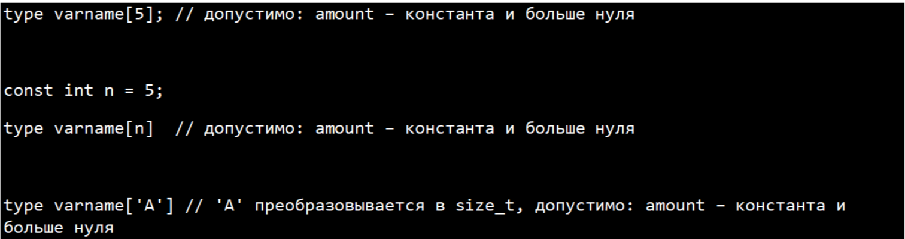

Массивы (Arrays)
В данной статье мы поведаем вам о массивах. Как вы, наверное, уже знаете, переменная – это ячейка в памяти, в который можем занести какую-либо информацию. Но что нам делать, если нам необходимо хранить сразу несколько данных в одной переменной? Для этого есть массив! Массив – непрерывный участок памяти, в каждую ячейку которого мы можем занести некоторое значение.
Проще всего воспринимать массив, как некоторый список объектов. Разберем на примере:
Предположим, что у нас есть список покупок для похода в магазин:
- Хлеб
- Молоко
- Майонез
- Пельмени
- Соевый соус
Объявление массива происходит по следующей схеме:
где, type – тип данных, varname – название массива, amount – количество элементов в массиве. При этом, amount должна быть больше нуля (массив не может быть нулевого размера) и amount должно быть константой. То есть допустимы варианты:

Размер массива может быть объявлен переменной, но для этого необходимо работать с динамическими массивами.
Но этой теме будет посвящена отдельная статья.
В нашем примере, мы работаем со строками и элементов у нас 5, тогда наша строка примет вид:
Инициализация элементов массива может быть произведена двумя путями:
1. При объявлении массива: в таком случае не обходимо после знака равно в фигурных скобках указать все элементы.
В нашем примере:
2. Или можем инициализировать каждый элемент по отдельности. Для этого нам придется обращаться к каждому из них и приравнивать их к какому-то значению. Проще всего сделать это через циклы:
Как вы уже заметили, чтобы обратиться к определенному элементу массива, необходимо указать название массива и номер элемента в квадратных скобках. Таким образом мы можем работать с отдельным взятым элементом массива, как с обычной переменной (Вводить, выводить, менять ее значение и тд.). При этом итерация массива начинается с 0 – это значит, то нулевой элемент массива shopping_list [0] – является его первым элементом (В данном случае "Хлеб")
Например, в данной программе, мы сначала запишем, введя через консоль каждый элемент, а затем выведем на экран через пробел.
Но что произойдет если мы выведем сам массив?
Все просто, на экране мы увидим адрес первого элемента массива. А это означает, что сам массив является
всего лишь указателем на первый элемент списка.
Мы же уже говорили, что массив – это непрерывный участок памяти? Ячейки памяти расположены друг за другом.
Значит, чтобы обратиться ко второму элементы мы так же можем написать Забегая наперед скажем, что, чтобы команда получения значения переменной по ее адресу имеет вид: *(адрес)
Напишем простую программу
Мы получили все значения и их адреса. Для чего это может использоваться? К примеру, для передачи массива в функцию. Ведь проще вместо передачи всех элементов массива передать всего лишь одну ссылку. Понимания данных аспектов открывает множество дверей в программировании.
Так же, вы могли заметить, что в данной статье для примера использовались строки. Строки – то же массив. Массив типа char, с которым мы может работать точно также ка и с любым другим массивом.
В заключении можно сказать, что статические массивы обеспечивают простой способ выделения и использования нескольких переменных одного типа данных до тех пор, пока размер массива известен во время компиляции.
Текст написал : Станислва Бревнов